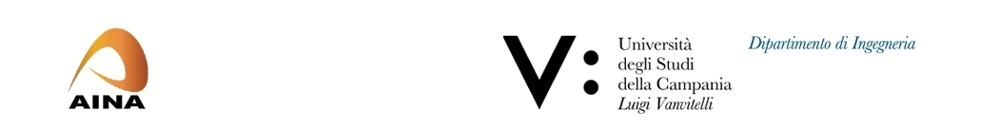

March 29, 2023 – March 31, 2023

For any submission problem, please send an email
to: alba.amato@unicampania.it
Workshop Chair
Alba Amato, Università degli Studi della Campania Luigi Vanvitelli, Italy
The 1th International Workshop on Digital Humanities (DHDW-2023) will serve as a major forum for Academics, and industry researchers of new ideas, methods, and research initiatives in the areas of Digital Humanities (DH). Digital Humanities are an emerging discipline that deals with themes of humanistic research through new approaches and paradigms based on ICT (Information Communication Technology) tools. DH lead to new approaches focusing on the dialogue between computer science and humanities studies. The goal of this workshop is to discuss and promote the research and development of research which lies at the intersection of these two area. Participants are invited to present their innovative work in the workshop in all areas of Digital Humanities such as, but not limited to the following areas:
- Annotating Archiving and Artifacts.
- Social Media and Crowdsourcing·
- Digital History. Archives and Digital Publishing.
- Documentation. Digital Storytelling and Exhibitions
- Emulation.
- Encoding.
- Experience Architecture.
- Gamification.
- Extended Reality and Games.
- Images and 3D Images. 3D Modeling / Visualization·
- Information Retrieval.·
- Instructional Design.·
- Language.·
- Learning Analytics.·
- Linked Open Data.·
- Machine Learning.·
- Metadata Management·
- Theoretical and Critical Approaches for DH
IMPORTANT DATES
- Paper Submission Deadline : November 15 2022
- Author Notification : December 25, 2022
- Final Manuscript Due : January 15, 2023
- Author Registration : January 15, 2023
Paper Submission Guidelines:
Workshop papers should be maximum 10 pages long. However, authors can add up to 2 extra pages with the appropriate fee payment. Papers must be prepared using the Lecture Notes Style of Springer Proceedings (Please download from HERE), and must be formatted in PDF format.
Please submit to:
https://edas.info/newPaper.php?c=29652&track=112198
Further information are available at
http://voyager.ce.fit.ac.jp/conf/aina/2023/guidelines.php
Publication of Papers:
All accepted papers will be included in conference proceedings of Lecture Notes series published by Springer. Proceedings will be sent by Springer for indexing in EI and SCOPUS. Authors of accepted papers will be given instructions for submission of camera ready and copyright form. Presented papers at AINA-2023 will be considered for publication in some Special Issues in International Journals.
Prepare your paper in PDF file (Adobe format), and submit it electronically to theEDAS online submission system.
https://edas.info/newPaper.php?c=29652&track=112198
Accepted papers will be given guidelines in preparing and submitting the final
manuscript(s) together with the notification of acceptance.
Proceedings of the conference will be published in Springer Series "Lecture Notes in Networks and Systems"
| https://www.springer.com/series/15179 |  |
Accepted papers will be given guidelines in preparing and submitting the final manuscript(s) together with the notification of acceptance. Authors of accepted papers, or at least one of them, are requested to register and present their work at the conference, otherwise their papers will be removed from the digital library after the conference.